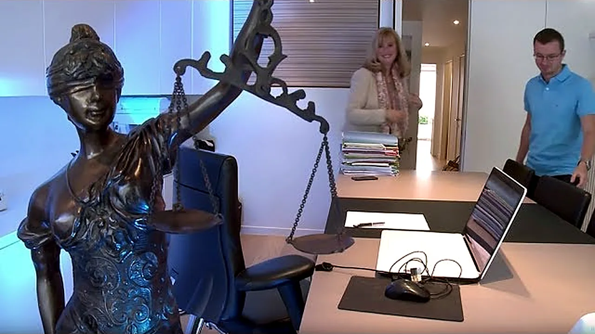
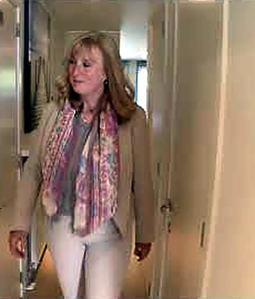
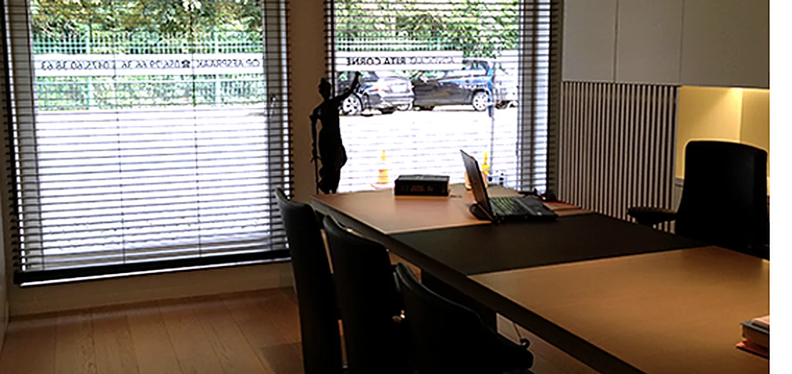
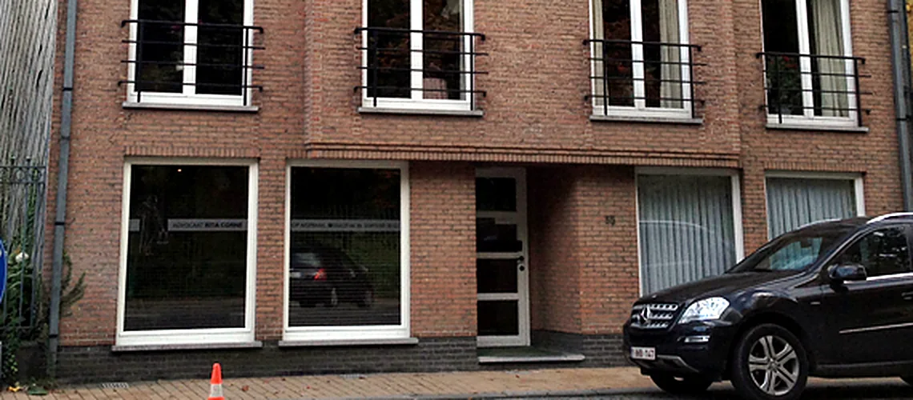
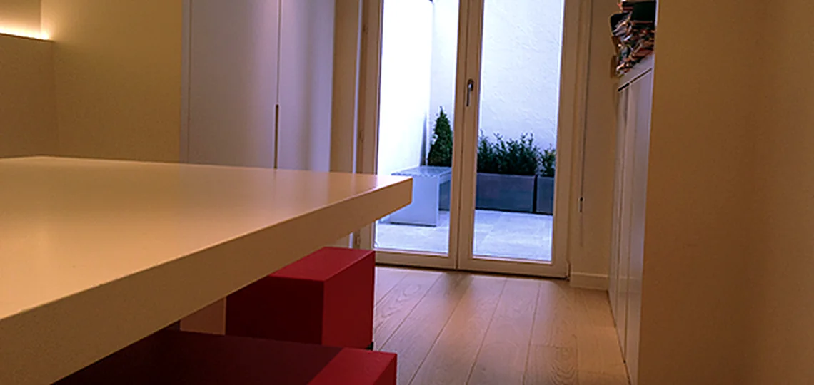
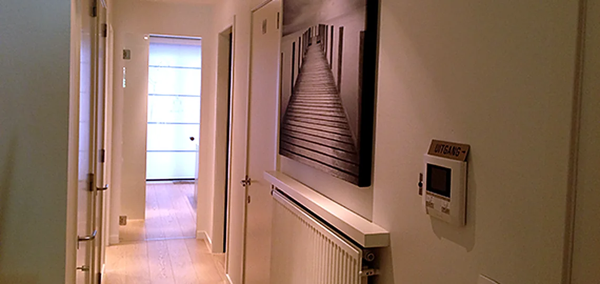
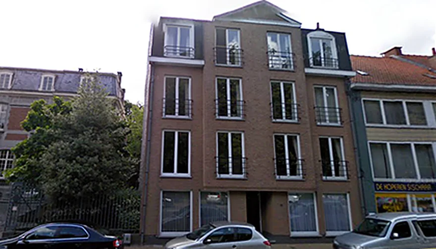

Persoonlijk, direct en duidelijk.
Rita Corne is sinds 1988 advocaat aan de balie van Kortrijk. U krijgt bijstand op maat van uw situatie, en alles wat u vertelt blijft vertrouwelijk.
15 reviews op Google
als advocaat
rechter in Kortrijk


Opgegroeid in Wevelgem, advocaat sinds 1988.
Rita Corne liep school in De Posthoorn, hier in Wevelgem. Vandaag heeft ze haar kantoor in het centrum van de gemeente, op wandelafstand van het gemeentepark.
- 1985
Licentiaat in de Rechten
Afgestudeerd aan de Rijksuniversiteit Gent.
- 1988
Op het tableau van de balie van Kortrijk
Na drie jaar stage als advocaat-stagiair. Sindsdien zonder onderbreking aan de slag.
- 1995
Plaatsvervangend rechter
In de rechtbank van eerste aanleg te Kortrijk. Ze kent een rechtszaak dus ook van de andere kant van de tafel.
- Salduz
Certificaat Salduzopleiding
De opleiding voor advocaten die bijstand verlenen tijdens een verhoor.
Waarvoor u bij het kantoor terechtkunt.
Van een echtscheiding tot een onbetaalde factuur of een verkeersongeval. Kies een vakgebied en u ziet meteen welke zaken het kantoor behandelt.
Personen- en familierecht
Als een relatie stopt of er in de familie iets geregeld moet worden, wilt u vooral rust en duidelijke afspraken. Ook voor de kinderen.
- Echtscheiding en het einde van samenwonen
- Vereffening en verdeling
- Verblijfs- en onderhoudsregeling voor kinderen
- Erkennings- en ontkenningsprocedures
- Adoptie
- Erfrecht en nalatenschappen
Burgerlijk recht
Een huurder die niet betaalt, een verhuurder die niet herstelt of een koop die anders uitdraait dan afgesproken.
- Contracten en afspraken
- Woninghuur
- Handelshuur
- Koop
Ondernemingsrecht
Voor zelfstandigen en bedrijven, van facturen die blijven openstaan tot een onderneming die het moeilijk heeft.
- Invorderingen
- Handelsrecht
- Ondernemingen in moeilijkheden
Strafrecht
Bijstand voor wie vervolgd wordt en voor wie zich burgerlijke partij stelt, van de politierechtbank tot het hof van beroep.
- Politierechtbank
- Raadkamer
- Correctionele rechtbank
- Kamer van inbeschuldigingstelling
- Hof van beroep
- Strafuitvoeringsrechtbank
Verzekeringen en aansprakelijkheid
Na een ongeval of een medische fout wilt u weten wie aansprakelijk is en welke vergoeding er tegenover staat.
- Verkeersrecht
- Menselijke schade
- Medische aansprakelijkheid
Sociaal en arbeidsrecht
Gewond geraakt op het werk of op weg ernaartoe? Dan heeft u recht op een vergoeding, en daarbij helpt het kantoor u.
- Arbeidsongevallen
Vastgoed en aanneming
Een verbouwing die niet loopt zoals beloofd, of een probleem rond bouwen zonder vergunning.
- Aanneming
- Bouwmisdrijven
Collectieve schuldenregeling
Lukt het niet meer om alle schulden af te betalen, dan kan een collectieve schuldenregeling opnieuw ademruimte geven. Het kantoor helpt u met de aanvraag.
- Aanvraag collectieve schuldenregeling
Zo begint het, rustig en zonder drempel.
Twijfelt u of uw probleem iets is voor een advocaat? Dan is een verkennend gesprek de beste eerste stap.
U mailt of belt
Mailen is de makkelijkste en snelste weg. U krijgt spoedig antwoord.
Een verkennend gesprek
Op kantoor in de Vanackerestraat vertelt u wat er speelt. Daarna weet u welke stappen zinvol zijn.
Duidelijkheid over de kosten
U hoort hoe het ereloon berekend wordt. De betaling spreiden kan in overleg.
Wat kost een advocaat?
Vaste tarieven bestaan er niet. U betaalt een ereloon en een vergoeding voor kosten zoals briefwisseling, verplaatsingen en telefoons.
Hoe het ereloon berekend wordt, hangt af van uw zaak. Dat gebeurt op een van deze vijf manieren.
Volgens uurtarief
Het aantal gewerkte uren maal het uurtarief. U kunt vragen om geregeld te horen hoeveel uren er al gepresteerd zijn.
Volgens de waarde van de zaak
U betaalt een bepaald percentage van de waarde van de zaak.
Volgens de geleverde prestaties
Op basis van het werk, het belang en de moeilijkheid van de zaak, het resultaat en de hoogdringendheid.
Met een jaarcontract
Vooral voor bedrijven die verschillende zaken aan het kantoor toevertrouwen.
Voor een vast bedrag
Voor kleinere verkeerszaken, strafzaken, eenvoudige familiezaken en huurzaken.
Vaak wordt er een voorschot gevraagd. In een procedure komen er gerechtskosten bij, tenzij de rechter beslist dat de tegenpartij die betaalt.
Het kantoor neemt momenteel geen nieuwe dossiers meer aan in het kader van tweedelijnsbijstand (pro deo).
In de Vanackerestraat, vlak bij het gemeentepark.
Het kantoor ligt in het centrum van Wevelgem en is makkelijk bereikbaar. Zo ziet het eruit als u binnenkomt.





Ruim parkerenAan het gemeentepark, ter hoogte van het kantoor
Tijdens de kantoorurenHet kantoor is enkel bereikbaar tijdens de kantooruren
DiscreetAlles wat u vertelt, wordt vertrouwelijk behandeld
Stel uw vraag, u krijgt snel antwoord.
Vertel kort waar het over gaat. Uw bericht komt rechtstreeks in de mailbox van Rita Corne terecht.
Vanackerestraat 55/00.018560 Wevelgem
Route plannen